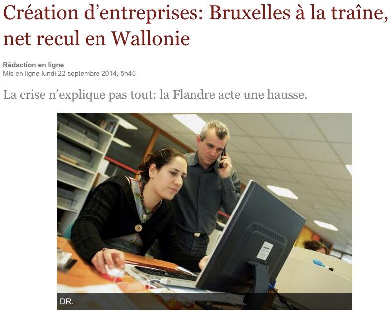

La question du jour #1
This post was originally written in French.
Hier, 22 septembre 2014, Le Soir titrait "Création d’entreprises: Bruxelles à la traîne, net recul en Wallonie"

Je me posais la question suivante: en quoi le nombre d'entreprises créées est une mesure intéressante?
Je pourrais encore comprendre la différence entre les entreprises créées et les faillites, le nombre de nouveaux emplois, le solde d'emplois, l'augmentation de valeur ajoutée ... qui sont tous des éléments probablement plus difficilement mesurables. Mais soit, une idée du pourquoi?
En plus l'article s'accompagne de cette phrase "Il (l'auteur de l'étude) pointe également la frilosité des institutions financières à soutenir les projets des candidats entrepreneurs."La phrase bateau par excellence ... grrrrr ....
Comments 2
roulive, 2014-09-24 14:31
Et oui, j'aime bien la fin de la proposition, avoir des données concrètes neutres sur lesquelles nos maîtres pourraient s'exprimer. Ça rappelle tous les faux chiffres du dernier débat présidentiel en France (http://rue89.nouvelobs.com/rue89-presidentielle/2012/05/03/de-la-zapatera-au-bristol-petits-et-gros-mensonges-du-debat).
Damien Van Achter (@davanac), 2014-09-23 22:57
cet article m'a fait tiquer aussi ... Mais c'est vrai aussi que trouver un indicateur fiable n'est pas forcément chose aisée. On fait toujours dire aux chiffres un peu ce qu'on a envie ... Ca serait peut-être intéressant de voir avec Toon (data.be) quel genre de données ont pourrait mettre dans la balance en les correlant avec d'autres afin de dégager des hypothèses sur la hause/la baisse réelle du nombre d'entreprises (de quelle type ?), la hausse/labaisse du nb d'emplois (de quel type ?) Où, précisément ? etc ... Parce que c'est ça au final qui pourrait être passionant... Avoir une vision présice de la sitatuon à Bxl et en Wallonie, et de demander aux politiques de s'exprimer par rapport celle-ci ...